Healing Sooner. Wellness Longer.
A company of companies. Focused manufacturers in regenerative biologics and lower extremity fixation, brought together under one standard and carried into the operating rooms of Northeast Ohio.
A company of companies. Each manufacturer Lotus Medical represents leads its category, and none of them lives in a major catalog.
Collaboration
Lotus Medical works beside the clinician, case by case, to advance patient care. The surgeon leads. Lotus Medical serves.
Science
Every claim on this site is sourced to the manufacturer or the literature, and the difference is stated plainly.
Service
One standard for every product: Lotus Medical carries only what it would trust for the people it loves.
Fixation that holds. Biology that heals.
A company of companies, growing one manufacturer at a time. Each earns its place on the science, and each page carries the evidence.
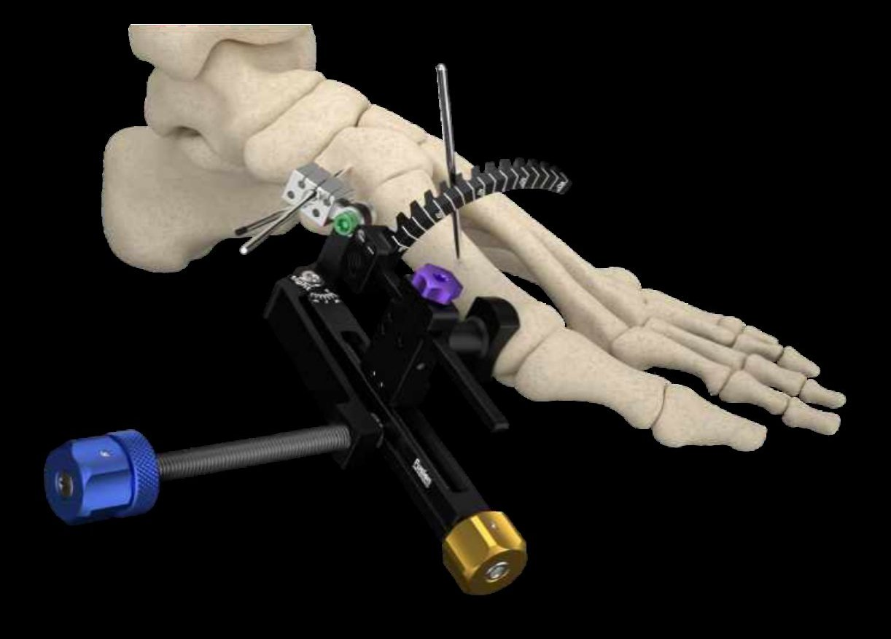
LapiLock
Four-plane Lapidus correction, set and held from one frame.
Explore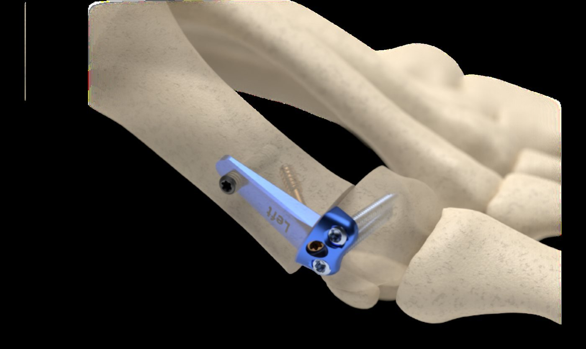
MiniLock
Percutaneous, low-profile fixation for minimally invasive bunion correction.
Explore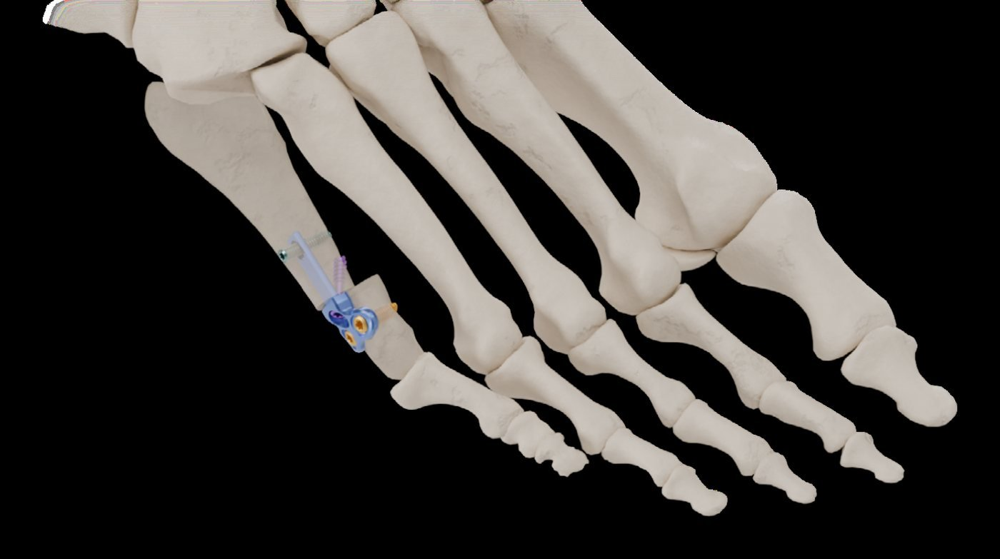
TailorLock
An anatomic plate for the bunionette, through a 1 to 2 cm incision.
Explore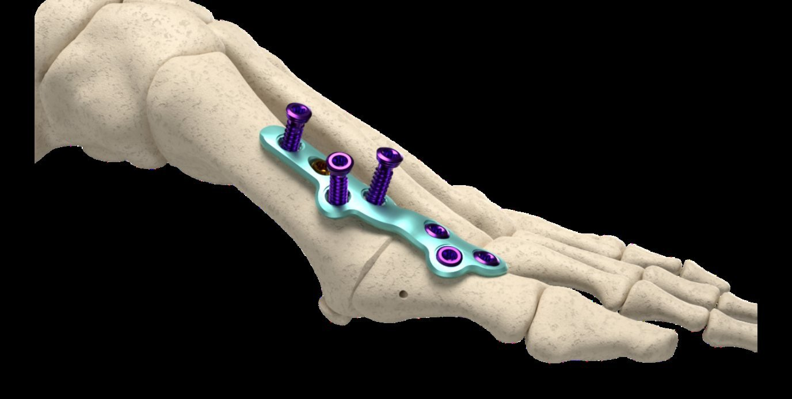
PolyLock MTP
Thin, malleable plates for first MTP fusion, with 30° poly-axial locking.
Explore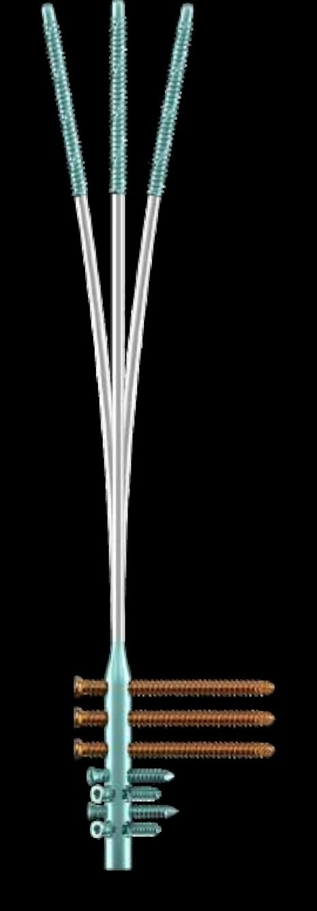
FibFix
A low-profile intramedullary nail for fibula fractures. FDA 510(k) cleared, 2026.
Explore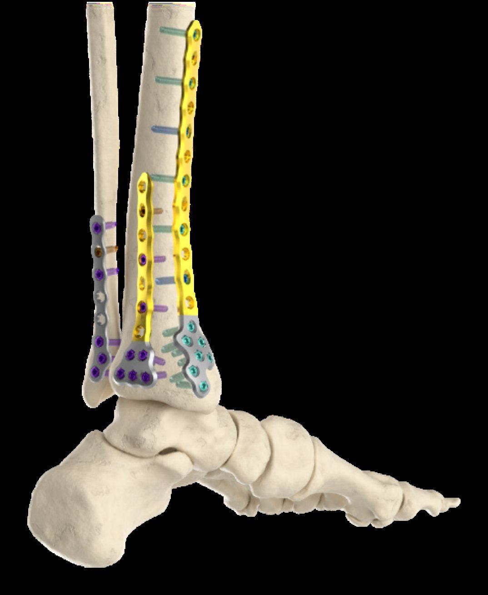
The full line
Ankle, pilon, calcaneal, midfoot and small-bone plating, screws, staples and biologics.
See the line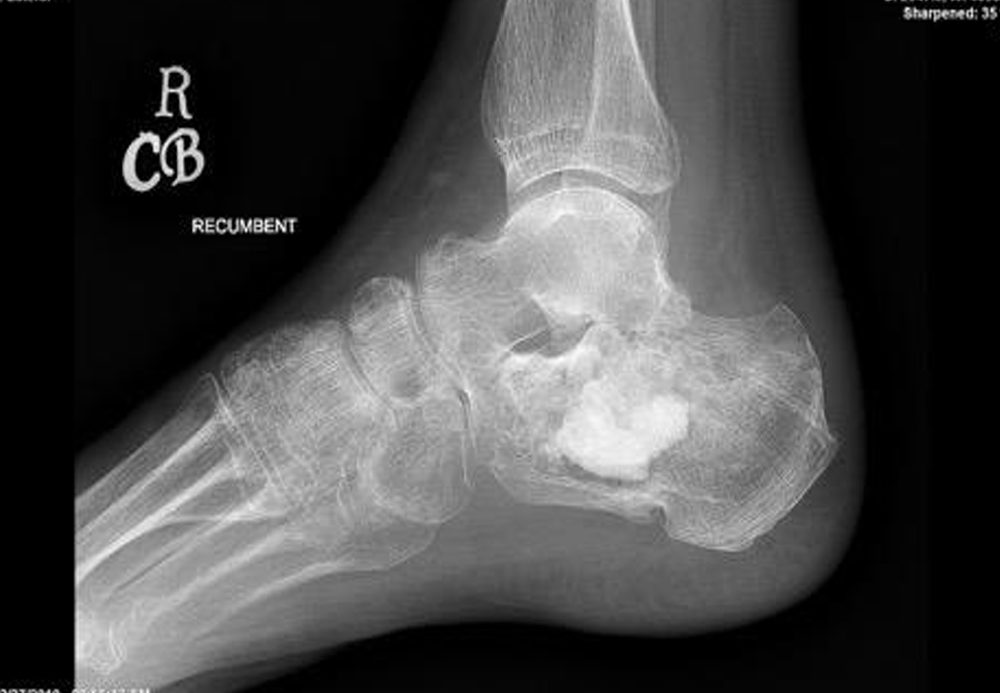
Mg OsteoCrete
The only magnesium in orthopedics. Fills, holds, resorbs and remodels into bone.
Explore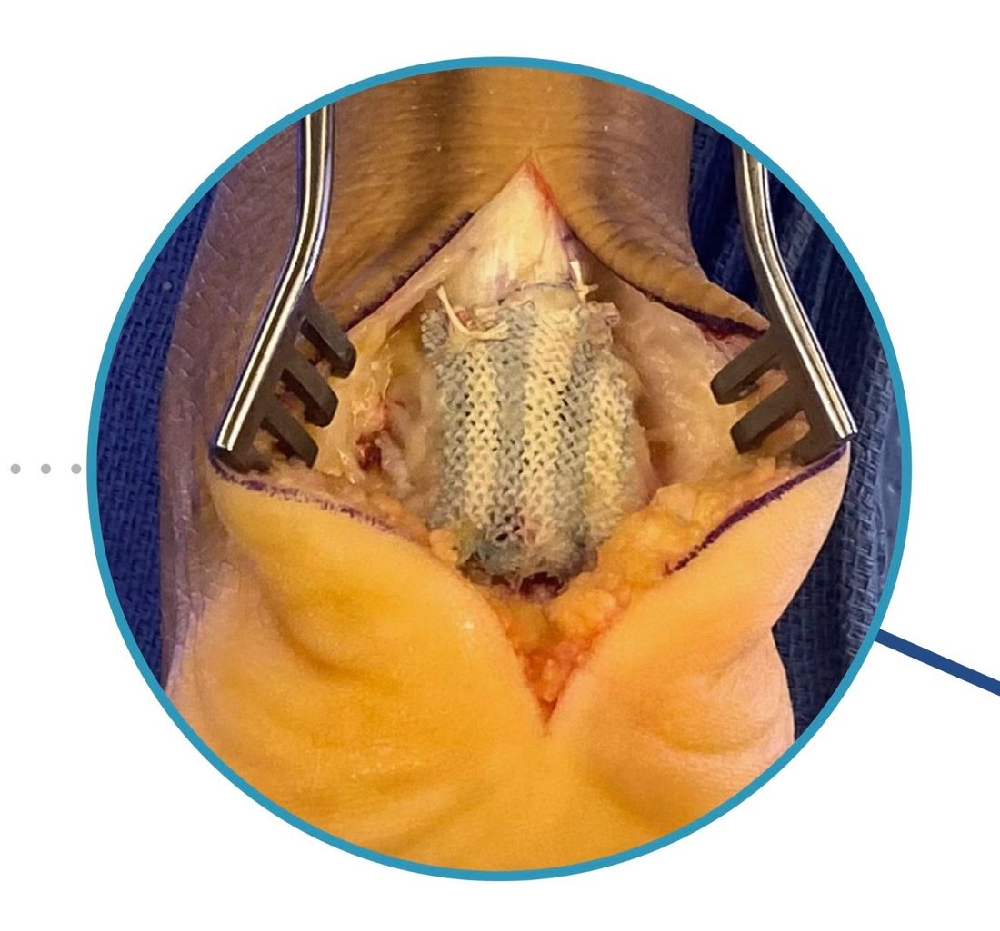
Integrity
A hyaluronic acid scaffold for tendon repair. No animal tissue.
Explore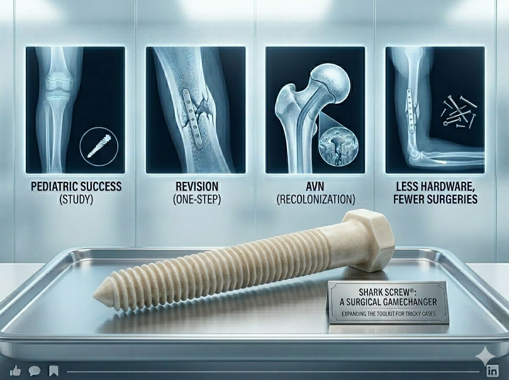
Shark Screw
A screw of human cortical bone that remodels into the patient’s own bone.
Explore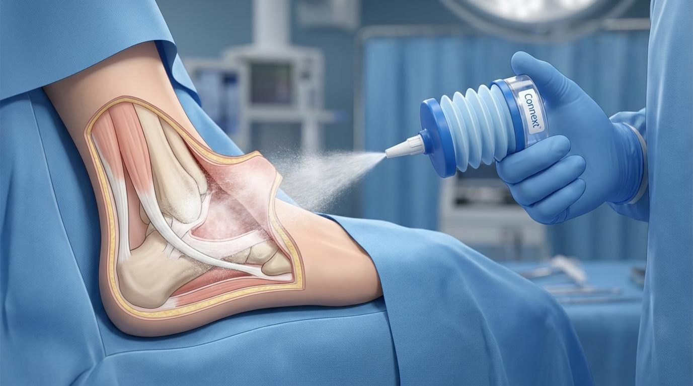
Connext
Sprayed collagen that fills dead space, drinks the fluid and resorbs.
Explore
Poseidon
A clear nanosilver hydrogel. 1 ppm silver, no antibiotic.
ExploreFrom the forefoot to the tibia.
Touch a point in the drawing to see where a technology works. Click to open its page.
- Integrity · Achilles, peroneal and posterior tibial tendons.
- FibFix · Fibula fractures and syndesmotic injury.
- Connext · The surgical dead space, under the flap.
- Mg OsteoCrete · Subchondral defects, cysts and calcaneal voids.
- Shark Screw · Calcaneal osteotomy, arthrodesis and non-union.
- LapiLock · The first tarsometatarsal joint.
- TailorLock · The fifth metatarsal and bunionette.
- MiniLock · MIS correction of the first metatarsal.
- PolyLock MTP · First MTP joint fusion.
- Poseidon · Incisions and wounds, partial or full thickness.
Everything better, toe to tibia.
A complete lower extremity fixation line: anatomically contoured plates, poly-axial locking, flush low-profile screw heads and MIS-friendly instruments.
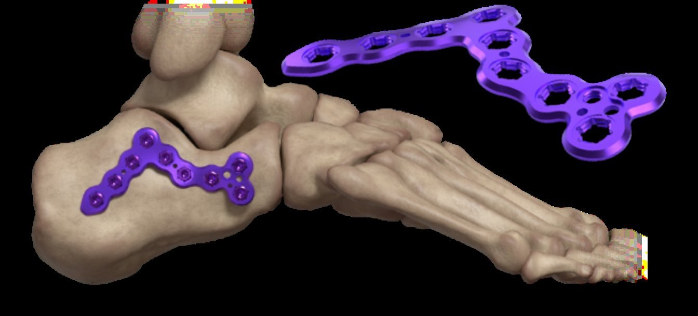
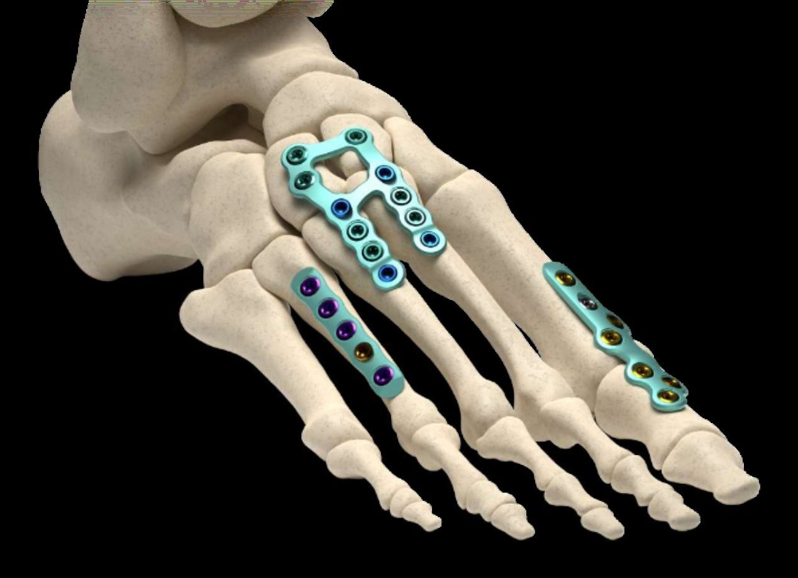
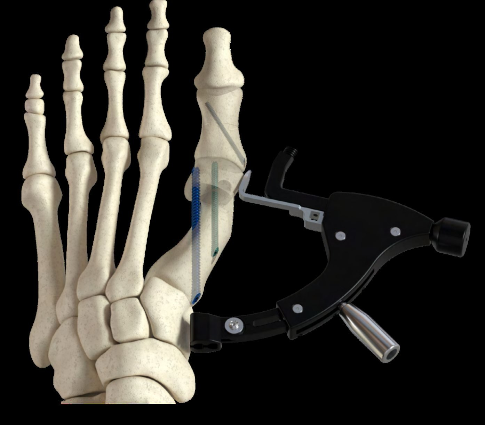
A Cleveland company, built to serve.
Lotus Medical is a company of companies. It places state-of-the-art regenerative orthopedics and fixation into the hands of the surgeons who use them, with integrity and the patient always first, so patients heal sooner and stay well longer.
Scott Stojetz
Nearly thirty years in medical devices, including nineteen years at Medtronic in neurologic technologies and five years in surgical robotics for spine and cranial surgery. Founded Lotus Medical to bring advanced regenerative biologics and fixation to Northeast Ohio. Author of four books. Personal standard: be kind and tell the truth.
scott@lotusmedcompany.comJohn Callahan
Works beside orthopedic surgeons across reconstruction, trauma, foot and ankle, and upper extremity cases. All-state football at Hudson High School, Mount Union and Kent State, Exos Performance Specialist, and former strength and conditioning coach.
john@lotusmedcompany.comBuilt to serve the surgeons of Northeast Ohio.
Lotus Medical brings the technology, the science and the support into the operating room, for every case.